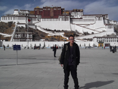

吾心之愿 桃李芬芳
洛桑更才，文学院学生。他是一名来自雪域高原的孩子，出生在一个偏僻的小山村。很小的时候，母亲就离开了他。从那时起，他便与年迈的父亲和小他三岁的弟弟相依为命。由于没有固定的经济来源，家庭状况一直徘徊在温饱线上。即便如此，他从未悲观。虽然他没有能力赚钱养家，但他相信只要用功读书，不放弃梦想，他就无愧
于自己，无愧于家人。
成为一名优秀的人民教师，是洛桑更才一直以来的梦想。四年前，他满怀着憧憬与期待来到了这里，开始了充实、丰富而又有意义的大学生活。新生入学时的电影《冯志远》带给他很深的触动与震撼。冯老师在双目失明的情况下仍然眷恋那三尺讲台，将自己的宝贵青春与毕生精力都奉献给了那片贫瘠的土地，一种神圣的使命感由心底萌生。他是一个从大山里走出来的孩子，了解那里的孩子对知识的渴求。是落后的条件使他们不能够正常地接受教育，他只希望自己能够学有所成，重返偏远山区，在雪域高原之上播撒知识的火种，让更多的孩子有机会去看一看外面的世界。
正是为了完成这最初的梦想，2009年，洛桑更才组织成立了东北师范大学少数民族教师技能培训班。目的是让更多的少数民族学生体会授人以渔的快乐，切实提升教学基本功，让他们能够在传道、授业、解惑这条路上走的更稳、更远、更好……自那时起，每周六他都会邀请经验丰富的师长传授教技、教法方面的知识。他想通过这样的渠道为少数民族学生提供一个自我锻炼与发展的平台。功夫不负有心人，通过开展模拟课堂、教技比赛等活动，学员们逐渐体会到了教学的乐趣与魅力，并对自己即将开始的教育生涯充满了信心与期待。
洛桑更才是一个性格开朗，乐于交际的人，这就使他在日常交际过程中能够自然、大方地与他人相处。通过日常的接触和交往，他发现很多少数民族学生都在一定程度上存在心理障碍，普遍表现为缺乏自信。这就直接导致了他们不敢参加院、校的活动、不能够从容自若地与他人交流。他们当中的很多人都各有所长，只因缺少合理的激发与鼓励，使他们长时间地处于一种失语的状态。作为一名共产党员，他有理由帮助更多的人更好地融入学校这个大家庭。于是他通过成立协会、创办杂志、举办晚会等形式，想方设法地调动大家的积极性。2008年他组织了成立了锅庄舞协会，为有舞蹈天赋的少数民族学生提供了施展才华的舞台。协会成立之初便得到了学校领导和同学们的积极关注。院校两级的晚会中也经常能够看到藏族学生充满活力与激情的表演。西藏人的昂扬风貌与淳朴洒脱也伴随着舞蹈所传达的力与美呈现给众人。每一次表演过后那雷鸣般的掌声对他们来说都是莫大的鼓励。能够在公开场合中表演，能够得到那么多人的肯定，能够找到属于自己的舞台释放青春的自信与精彩。他们没有理由不自信，也没有理由不绽放！2009年洛桑更才组织创办藏文杂志《冈拉梅朵》，挖掘和培养了相当一批具备创作天赋的少数民族学生。他们用生花的妙笔去抒发心底最真实的声音。每期杂志从约稿到排版再到发行需要很长的时间，在这期间又需要很多个环节，需要众人通力配合才能够保证其正常的出版发行。正是在这样的过程中，同学们的组织协调、文字编辑、沟通合作的能力才得以提升。他们彼此之间都因为这样的一本凝聚了大家心血和汗水的杂志而结下了深厚的情谊。正是在以上种种努力下，在学校的领导、老师大力的支持和鼓励下，他们当中的大多数开始很好地融入班级、学院、学校这个大家庭。洛桑更才也从他们的言谈举止中看出他们的自信与蜕变。渐渐的，阅览室里有了他们专注的神情；绿茵场中有了他们矫健的身影；专业课上也有了他们积极回答的声音。看着大家逐步接受这里的一切，也逐步为人所接受，他觉得他所付出的一切努力都是值得的，即使这个过程很艰辛，即使刚开始会被很多人误解，但这些都已经不重要了。更何况他是一名学校培养的党员，这些都是他应该做的。洛桑更才只想让他们明白一个简单的道理：成功属于每一个人。没理由给自己一个差于他人的定位，没理由总被照顾或希望同情，更不能让基础差成为他们不思进取的理由。反之，更应成为前进的动力。加倍努力，和其他同学一样，最大限度地充实和提升自己。
每年暑假，洛桑更才都会组织各大高校的学生去西藏不同的地方支教。尽管过程很曲折、条件很艰苦，但其中的成长与收获总是令人欣慰的。正因亲眼目睹了山区基础教育的现状，才更加坚定了他投身基础教育、终身从教的决心。每年寒假，他都会自发地给家乡三十多名贫困生补习功课。他们和洛桑更才一样出身贫困，和他一样有对知识的渴求，和他一样有对未来的憧憬与期待……没有什么能够阻挡他们求知的脚步与向上的心，因为他们都一样，都有一个信念，那就是：只要不轻言放弃，定能创造生命最美丽的明天！支教的日子很苦、很累，有时候在这个班级教十分钟后不得不马上跑到另外一个班级教十分钟。一天下来，通常都是体力透支，甚至连吃饭的力气都没有。但洛桑更才从未想过放弃，因为支教的日子是充实的、快乐的。这种无法言说的快乐可能来自孩子们一个天真的表情，也可能来自那三尺讲台给予他的欣慰和满足。从大一到大四，洛桑更才从未间断过支教的脚步，他甚至不记得究竟翻过多少道山岭，走过多少里山路，到过多少个地方，教过多少个孩子……只是会在某个无眠的夜晚静静回想时，浮现于脑海的永远是孩子们满是期待的眼神和洋溢着快乐与幸福的红扑扑的笑脸。这难道还不足够么？
作为国家培养的首批免费师范生的一员。四年来，学校减免了他们的学费、住宿费，每月还为他们提供生活补助。这在很大程度上减轻了他们的学业负担。所以洛桑更才时常怀揣着一颗感恩的心，总是希望尽己所能为他人、为社会做点实事儿。地震时，他组织、动员各个高校的学生进行捐款捐物、发往灾区；放假回家时给山里的孩子们送去收集来的杂志和玩具；给养老院的爷爷、奶奶们带去过冬的衣裳；一有时间，他便四下奔忙，联系各单位筹集资金。其实他心里清楚通过这种形式能够筹来的几率很小，能够筹措的数目肯定也不多。偶尔还会遭到打击和白眼，但只要有一点机会，他都不愿放弃，他都会选择固执的坚持。因为每当他想放弃的时候，总会想到孩子们满是期待的眼神，总会想到山脚下破旧的校舍，总会想到孩子们拿到新书包、新文具时的兴奋与满足。他早已习惯了这种生活节奏与人生定位。虽然西藏的教育落后，但山区的孩子们一样好学，他渴望能尽自己的绵薄之力为他们做点什么，因为看到他们洛桑更才总能回想起当年的自己。这也更加坚定了他终身从教的信念，如果能在教师这个岗位上为改善山区基础教育现状做出贡献，那他的人生也就因此而变得更有意义了。
洛桑更才知道自己不够优秀，但是他有和大家一样追逐梦想的心。因为向往，所以走向远方，即使他的梦想很小，但是它一路伴洛桑更才成长。即使为这个梦想的实现他要付出放弃都市的繁华，放弃别人眼中的成功和财富，但他依然无怨无悔，只因为在离太阳最近的地方有一群渴望知识的孩子们在等待着他。他不会放弃他的理想，毕业回到家乡后，洛桑更才要像冯志远老师那样，与山区的孩子们一道，书写他人生最绚丽的篇章。
成为一名优秀的人民教师，是洛桑更才一直以来的梦想。四年前，他满怀着憧憬与期待来到了这里，开始了充实、丰富而又有意义的大学生活。新生入学时的电影《冯志远》带给他很深的触动与震撼。冯老师在双目失明的情况下仍然眷恋那三尺讲台，将自己的宝贵青春与毕生精力都奉献给了那片贫瘠的土地，一种神圣的使命感由心底萌生。他是一个从大山里走出来的孩子，了解那里的孩子对知识的渴求。是落后的条件使他们不能够正常地接受教育，他只希望自己能够学有所成，重返偏远山区，在雪域高原之上播撒知识的火种，让更多的孩子有机会去看一看外面的世界。
正是为了完成这最初的梦想，2009年，洛桑更才组织成立了东北师范大学少数民族教师技能培训班。目的是让更多的少数民族学生体会授人以渔的快乐，切实提升教学基本功，让他们能够在传道、授业、解惑这条路上走的更稳、更远、更好……自那时起，每周六他都会邀请经验丰富的师长传授教技、教法方面的知识。他想通过这样的渠道为少数民族学生提供一个自我锻炼与发展的平台。功夫不负有心人，通过开展模拟课堂、教技比赛等活动，学员们逐渐体会到了教学的乐趣与魅力，并对自己即将开始的教育生涯充满了信心与期待。
洛桑更才是一个性格开朗，乐于交际的人，这就使他在日常交际过程中能够自然、大方地与他人相处。通过日常的接触和交往，他发现很多少数民族学生都在一定程度上存在心理障碍，普遍表现为缺乏自信。这就直接导致了他们不敢参加院、校的活动、不能够从容自若地与他人交流。他们当中的很多人都各有所长，只因缺少合理的激发与鼓励，使他们长时间地处于一种失语的状态。作为一名共产党员，他有理由帮助更多的人更好地融入学校这个大家庭。于是他通过成立协会、创办杂志、举办晚会等形式，想方设法地调动大家的积极性。2008年他组织了成立了锅庄舞协会，为有舞蹈天赋的少数民族学生提供了施展才华的舞台。协会成立之初便得到了学校领导和同学们的积极关注。院校两级的晚会中也经常能够看到藏族学生充满活力与激情的表演。西藏人的昂扬风貌与淳朴洒脱也伴随着舞蹈所传达的力与美呈现给众人。每一次表演过后那雷鸣般的掌声对他们来说都是莫大的鼓励。能够在公开场合中表演，能够得到那么多人的肯定，能够找到属于自己的舞台释放青春的自信与精彩。他们没有理由不自信，也没有理由不绽放！2009年洛桑更才组织创办藏文杂志《冈拉梅朵》，挖掘和培养了相当一批具备创作天赋的少数民族学生。他们用生花的妙笔去抒发心底最真实的声音。每期杂志从约稿到排版再到发行需要很长的时间，在这期间又需要很多个环节，需要众人通力配合才能够保证其正常的出版发行。正是在这样的过程中，同学们的组织协调、文字编辑、沟通合作的能力才得以提升。他们彼此之间都因为这样的一本凝聚了大家心血和汗水的杂志而结下了深厚的情谊。正是在以上种种努力下，在学校的领导、老师大力的支持和鼓励下，他们当中的大多数开始很好地融入班级、学院、学校这个大家庭。洛桑更才也从他们的言谈举止中看出他们的自信与蜕变。渐渐的，阅览室里有了他们专注的神情；绿茵场中有了他们矫健的身影；专业课上也有了他们积极回答的声音。看着大家逐步接受这里的一切，也逐步为人所接受，他觉得他所付出的一切努力都是值得的，即使这个过程很艰辛，即使刚开始会被很多人误解，但这些都已经不重要了。更何况他是一名学校培养的党员，这些都是他应该做的。洛桑更才只想让他们明白一个简单的道理：成功属于每一个人。没理由给自己一个差于他人的定位，没理由总被照顾或希望同情，更不能让基础差成为他们不思进取的理由。反之，更应成为前进的动力。加倍努力，和其他同学一样，最大限度地充实和提升自己。
每年暑假，洛桑更才都会组织各大高校的学生去西藏不同的地方支教。尽管过程很曲折、条件很艰苦，但其中的成长与收获总是令人欣慰的。正因亲眼目睹了山区基础教育的现状，才更加坚定了他投身基础教育、终身从教的决心。每年寒假，他都会自发地给家乡三十多名贫困生补习功课。他们和洛桑更才一样出身贫困，和他一样有对知识的渴求，和他一样有对未来的憧憬与期待……没有什么能够阻挡他们求知的脚步与向上的心，因为他们都一样，都有一个信念，那就是：只要不轻言放弃，定能创造生命最美丽的明天！支教的日子很苦、很累，有时候在这个班级教十分钟后不得不马上跑到另外一个班级教十分钟。一天下来，通常都是体力透支，甚至连吃饭的力气都没有。但洛桑更才从未想过放弃，因为支教的日子是充实的、快乐的。这种无法言说的快乐可能来自孩子们一个天真的表情，也可能来自那三尺讲台给予他的欣慰和满足。从大一到大四，洛桑更才从未间断过支教的脚步，他甚至不记得究竟翻过多少道山岭，走过多少里山路，到过多少个地方，教过多少个孩子……只是会在某个无眠的夜晚静静回想时，浮现于脑海的永远是孩子们满是期待的眼神和洋溢着快乐与幸福的红扑扑的笑脸。这难道还不足够么？
作为国家培养的首批免费师范生的一员。四年来，学校减免了他们的学费、住宿费，每月还为他们提供生活补助。这在很大程度上减轻了他们的学业负担。所以洛桑更才时常怀揣着一颗感恩的心，总是希望尽己所能为他人、为社会做点实事儿。地震时，他组织、动员各个高校的学生进行捐款捐物、发往灾区；放假回家时给山里的孩子们送去收集来的杂志和玩具；给养老院的爷爷、奶奶们带去过冬的衣裳；一有时间，他便四下奔忙，联系各单位筹集资金。其实他心里清楚通过这种形式能够筹来的几率很小，能够筹措的数目肯定也不多。偶尔还会遭到打击和白眼，但只要有一点机会，他都不愿放弃，他都会选择固执的坚持。因为每当他想放弃的时候，总会想到孩子们满是期待的眼神，总会想到山脚下破旧的校舍，总会想到孩子们拿到新书包、新文具时的兴奋与满足。他早已习惯了这种生活节奏与人生定位。虽然西藏的教育落后，但山区的孩子们一样好学，他渴望能尽自己的绵薄之力为他们做点什么，因为看到他们洛桑更才总能回想起当年的自己。这也更加坚定了他终身从教的信念，如果能在教师这个岗位上为改善山区基础教育现状做出贡献，那他的人生也就因此而变得更有意义了。
洛桑更才知道自己不够优秀，但是他有和大家一样追逐梦想的心。因为向往，所以走向远方，即使他的梦想很小，但是它一路伴洛桑更才成长。即使为这个梦想的实现他要付出放弃都市的繁华，放弃别人眼中的成功和财富，但他依然无怨无悔，只因为在离太阳最近的地方有一群渴望知识的孩子们在等待着他。他不会放弃他的理想，毕业回到家乡后，洛桑更才要像冯志远老师那样，与山区的孩子们一道，书写他人生最绚丽的篇章。